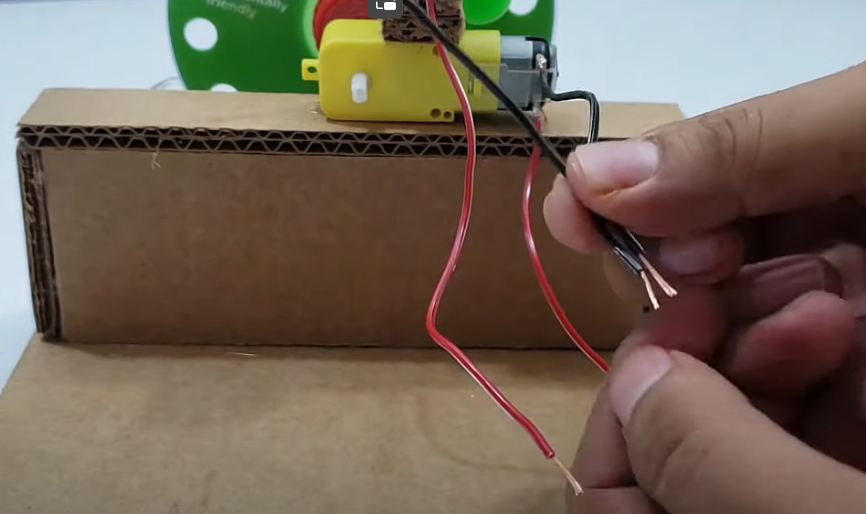

.Botella 330 ML
.Carton
.Cd
.Cautin
.Tapa de botella
.Silicon
.Tornillo
.Motorreductor de doble eje
.Motor DC de 3v
.Helice
.Interruptor
.Baterias
.Portapilas
Video de referencia
Pasos para elaborarlo
Primero hacer un corte en la parte superior de la botella de 10x5cm
Cortar un cuadrado de 18x18cm para que sea la base (puede sustituirlo por una base de madera o un plato plastico), 4 rectangulos de 18x6.5cm,dos rectangulos de 6.5x6.5cm y pegarlos de manera que quede como en la imagen.
Con ayuda de un cautin o taladro realizarle agujeros a todo el contorno del CD y pegarle una tapa de botella en el medio.
Realizar las conexiones de ambos motores tanto positivas como negativas y pegar el motor de doble eje a la base.

Luego conectar ambas conexiones de los motores al interuptor y a la bateria.
Hacer una torre con cuadrados de carton para pegar el motor a la altura del CD y colocarle la helice.
Por ultimo revisar que todo el circuito funcione de manera correcta
Colocar liquido de burbujas (puede hacerlo por usted mismo) y ya estaria listo el generador de burbujas.
Movimiento Circular Uniforme y la Relacion con el Proyecto
Movimiento Circular Uniforme (MCU): En el MCU,nos indica que un objeto se mueve a lo largo de una trayectoria circular a una velocidad constante. Aunque la magnitud de la velocidad es constante, la dirección cambia constantemente, lo que implica que hay una aceleración centrípeta (dirigida hacia el centro del círculo o en este caso del CD).
Generador de Burbujas Casero: Si consideramos que el CD del generador de burbujas se mueve en un círculo para atrapar el aire y formar las burbujas, en cierto sentido está realizando un movimiento circular, aunque no sea perfectamente uniforme.
¿Como se conecta el MCU y el generador de burbujas?
En resumen, el generador de burbujas casero podría asociarse al Movimiento Circular Uniforme porque el CD es el que genera las burbujas sigue una trayectoria circular y, si mantiene una velocidad constante, estaría realizando un MCU.